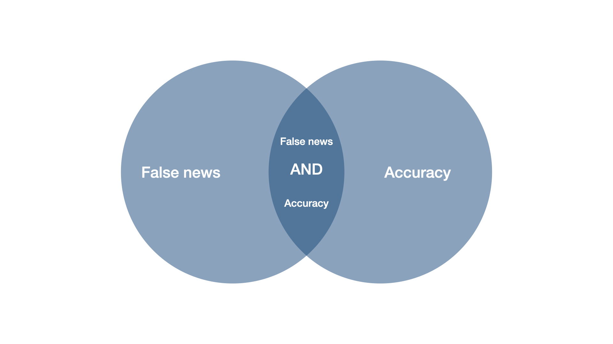
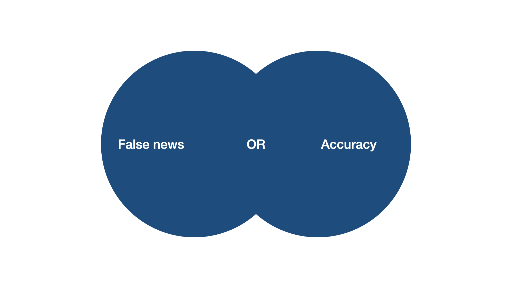
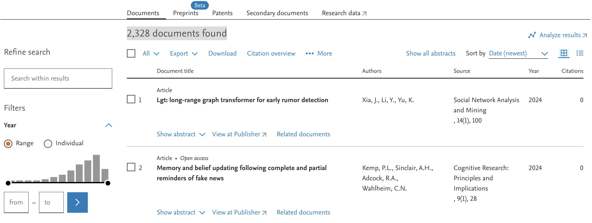
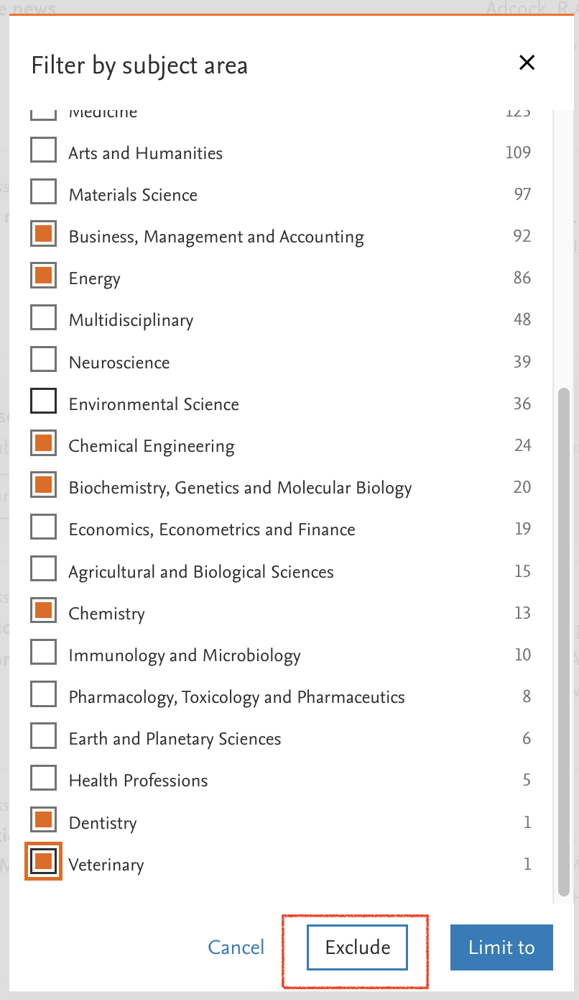
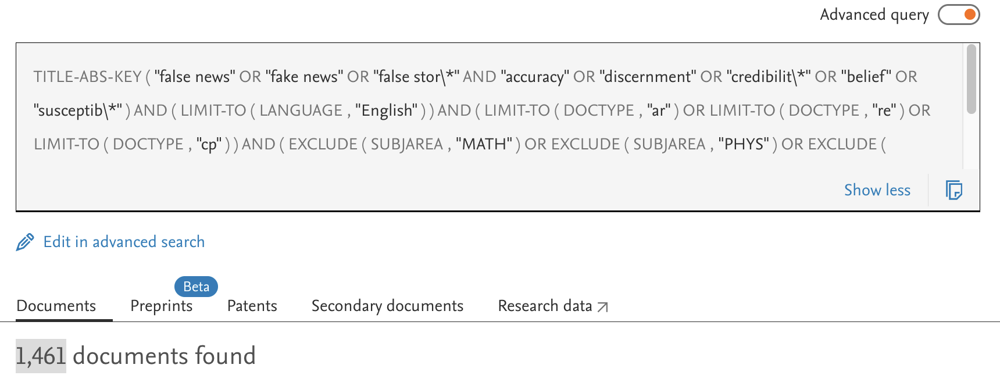
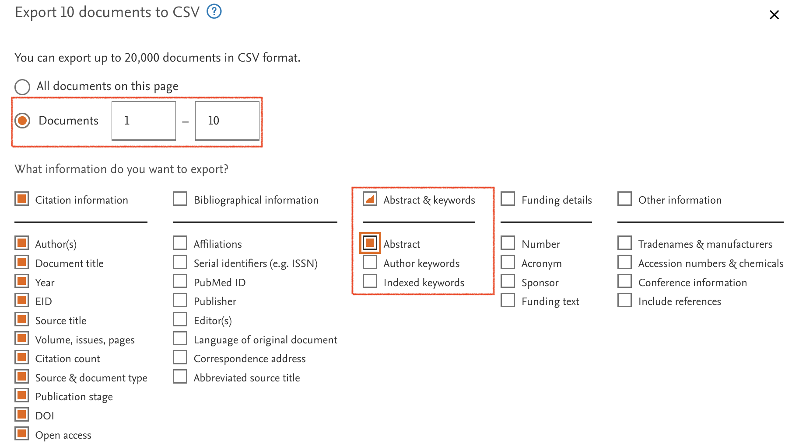
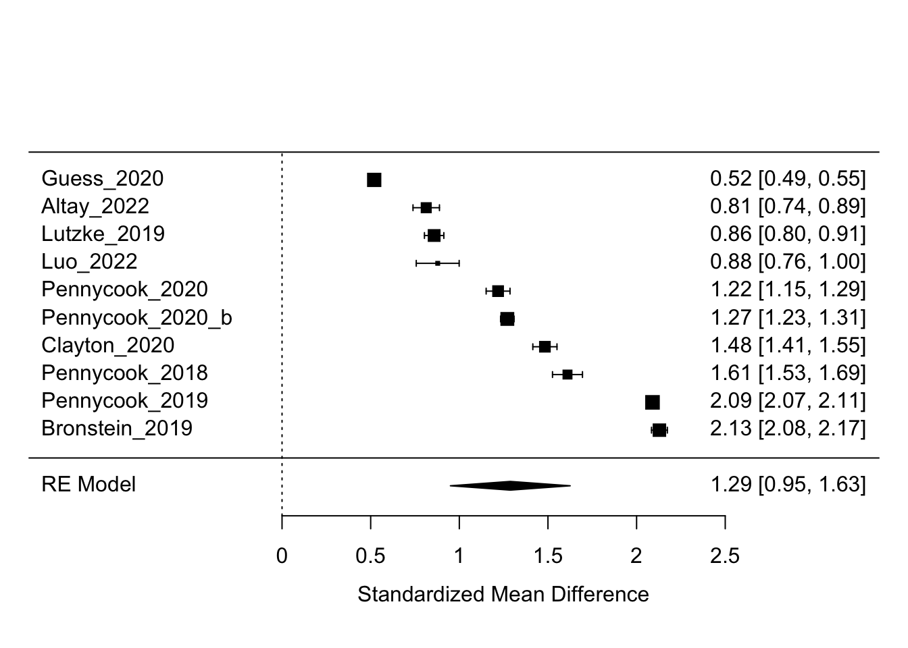

![]()
| ref | mean_accuracy_true | mean_accuracy_fake | accuracy_scale_numeric | discernment |
|---|---|---|---|---|
| Dias_2020 | 2.57 | 1.67 | 4 | 0.90 |
| Roozenbeek_2020 | 5.40 | 2.49 | 7 | 2.91 |
This is a beginners’ introduction to meta-analysis, simply because I myself am quite a beginner. So this is all I can do I’m afraid. My colleague Sacha Altay and I tried ourselves on our first ever meta-analysis very recently. Our main research question was whether people can tell true news from false news. Quite a hot topic these days, it seems.
Throughout this post, I’ll use our study as an example to illustrate crucial steps of a meta-analysis. These include (i) the systematic literature search, (ii) standardized effect sizes, and (iii) meta-analytic models.
The idea is for this to be a hands-on introduction, so try to follow the instructions and perform parts of these steps yourself. I hope this will help you understood how a (very basic kind of) meta-analysis works, and give you some idea on how to perform one yourself.
Why care about meta-analysis ?
You have most likely heard about the “Pyramid of evidence”. There are different versions of the pyramid, but they have one thing in common: at the very top, there are meta-analyses.

The basic idea of meta-analysis is easy: the more data the better. Results of single studies can be affected by a ton of factors, e.g. the country they were run in, the experimental setup the researchers, the sample they recruit and so on. But if we average across many studies on the same thing, we get a more robust, generalizable result. And comparing many studies, we might even get an idea of specific factors that are systematically associated with differences.
I The research question
Imagine our research question is: “Can people tell true news from false News”. And we know that there is psychological literature on that topic. These studies typically look like this:
Participants see a bunch of news headlines, sometimes with a lede and source, as they would appear on social media typically. Some of these headlines are false (typically identified as such by fact-checking sites such as Snopes), and some of them are true. For each news headline, they are asked to which extent they believe the headline to be accurate, (e.g. “To the best of your knowledge, how accurate is the claim in the above headline” 1 = Not at all accurate, 4 = Very accurate).
In order to do a meta-analysis, we need to have some quantifying measure for our research question. In this case, it is pretty straightforward. Researchers refer to people’s capacity to tell true news from false news as news discernment, which is simply:
\[ \text{discernment} = \text{mean accuracy}_{\text{true news}} - \text{mean accuracy}_{\text{false news}} \]
We have a research question, and we also already have an idea of a quantifiable answer. At this point, we would ideally write up a pre-registration. This is basically a plan for our meta-analysis project, including the literature search and analysis plan, but a plan that we commit to making public.
However, it is hard to write up a pre-registration for a meta-analysis if you don’t know anything about a meta-analysis. So we’ll skip this step for now and jump right into effect sizes.
II Effect sizes
It might feel weird to talk about standardized effect sizes before the systematic literature search. But only if we know how to calculate (standardized) effect sizes, we can know what exactly we are looking for in articles.
We want to be able to compare discernment across studies. The problem is: different studies use different measurement scales. For example, Dias, Pennycook, and Rand (2020) use a 4-point scale, while Roozenbeek et al. (2020) use a 7-point scale. How can we compare the results of the two?
The solution are standardized effect sizes. Instead of expressing discernment on the original scale of the study, we express discernment in terms of standard deviations. All we have to do is divide the discernment score by the (pooled) standard deviation of true and false news. So on top of the mean ratings, we also need the standard deviations.
| ref | mean_accuracy_true | sd_accuracy_true | mean_accuracy_fake | sd_accuracy_fake | accuracy_scale_numeric | discernment |
|---|---|---|---|---|---|---|
| Dias_2020 | 2.57 | 0.52 | 1.67 | 0.42 | 4 | 0.90 |
| Roozenbeek_2020 | 5.40 | 1.62 | 2.49 | 1.34 | 7 | 2.91 |
The standardized discernment measure that we are after is generally referred to as a standardized mean difference (SMD), with perhaps the most popular version being called Cohen’s d, named after the psychologist and statistician Jacob Cohen.
Cohen’s d is calculate as
\[ \text{Cohen's d} = \frac{\bar{x}_{\text{true}} - \bar{x}_{\text{false}}}{SD_{\text{pooled}}} \] with
\[ SD_{\text{pooled}} = \sqrt{\frac{SD_{\text{true}}^2+SD_{\text{false}}^2}{2}} \]
Using these formula, we can now calculate our standardized discernment measure.
pooled_sd <- function(sd_true, sd_false) {
sd_pooled <- sqrt((sd_true^2 + sd_false^2) / 2)
return(sd_pooled)
}
meta <- meta %>%
mutate(discernment = mean_accuracy_true - mean_accuracy_fake,
pooled_sd = pooled_sd(sd_accuracy_true, sd_accuracy_fake),
discernment_std = discernment/pooled_sd)| ref | mean_accuracy_true | mean_accuracy_fake | sd_accuracy_fake | accuracy_scale_numeric | sd_accuracy_true | discernment | pooled_sd | discernment_std |
|---|---|---|---|---|---|---|---|---|
| Dias_2020 | 2.57 | 1.67 | 0.42 | 4 | 0.52 | 0.90 | 0.4726521 | 1.904149 |
| Roozenbeek_2020 | 5.40 | 2.49 | 1.34 | 7 | 1.62 | 2.91 | 1.4866069 | 1.957478 |
Great! We are almost ready to go to the next step and talk about meta-analytic models. But before that, there’s one thing missing still: the standard error (SE).
Note
Standard error (SE) and standard deviation (SD) are not the same thing. SD measures the variability observed within a sample. In our case, e.g. distribution accuracy ratings of fake news. It can be calculated directly from the data. SE describes the variability of a (hypothetical) distribution of an effect. In our case, e.g. a distribution of mean accuracy ratings of fake news, each based on a different sample. We can only guess this distribution based on the data by relying on statistical theory.
The SE is like a measure of certainty. How certain can we be that we observe a certain discernment effect in a study not only because of sampling variation (e.g. the specific sample of participants we asked), but because there is actually a true effect in the population (in all people)? The bigger the sample, the smaller the SE, i.e. the more certain we can be that whatever we observe is actually representative of the population we want to make conclusions on.
\[ SE_{\text{Cohen's d}} = SD_{\text{pooled}}\sqrt{\frac{1}{n_\text{true}}+\frac{1}{n_\text{false}}} \]
with \(n_\text{false}\) being the sample size of fake news items, \(n_\text{true}\) the sample size of true news items in group 1, and \(SD_{\text{pooled}}\) the pooled standard deviation of both groups (see above).
In our case, things are a bit tricky. Usually, in studies of news judgements, participants rate both false and true news items, and several of each category. First, this means that technically, we have to calculate the SE slightly differently. In the SE formula above, we were assuming independence of true and false news ratings. But the distributions of false and true news are necessarily correlated, because they are coming from the same participants. For this tutorial, we will ignore this. Second, our n are all instances of news ratings, i.e. is the product of the number of participants in our study (n_subj) and the number of news ratings per participant (n_news).
| ref | n_subj | n_news | n |
|---|---|---|---|
| Dias_2020 | 187 | 24 | 4488 |
| Roozenbeek_2020 | 700 | 8 | 5600 |
With this information, we can now calculate the SE. In our case, n is the combined number of rating instances. Let’s just assume that participant saw equally many false news as true news, so that we have \(n_\text{true} = n_\text{false} = n/2\)
SE_Cohens_d <- function(sd_pooled, n_true, n_false) {
se_d <- sd_pooled * sqrt((1 / n_true) + (1 / n_false))
return(se_d)
}
meta <- meta %>%
mutate(discernment_SE = SE_Cohens_d(sd_pooled = pooled_sd, n_true = n/2, n_false = n/2))| ref | pooled_sd | n | discernment_std | discernment_SE |
|---|---|---|---|---|
| Dias_2020 | 0.4726521 | 4488 | 1.904149 | 0.0141106 |
| Roozenbeek_2020 | 1.4866069 | 5600 | 1.957478 | 0.0397312 |
Yay! Now that we have an effect size and its SE, we could run a meta-analysis.
If this was a bit tedious, here’s some good news: We do not have to do this by hand every time. There are several R packages specifically dedicated to meta-analysis that you can use. For example, the metafor package has a function called escalc() to calculate various effect sizes that are commonly used in meta-analyses. Here is an example of how to do what we just did using escalc:
library(metafor)
# Calculate SMD and its variance
meta_effect_sizes <- escalc(measure = "SMD",
# diff = true (m1i) - fake (m2i)
m1i=mean_accuracy_true,
sd1i=sd_accuracy_true,
m2i= mean_accuracy_fake,
sd2i=sd_accuracy_fake,
n1i = n_observations/2,
n2i = n_observations/2,
data = meta)
# View the resulting data frame with effect sizes and variances
meta_effect_sizes %>%
select(ref, starts_with("mean"), yi, vi) %>%
mutate(SE = sqrt(vi)) %>%
kable()| ref | mean_accuracy_fake | mean_accuracy_true | yi | vi | SE |
|---|---|---|---|---|---|
| Dias_2020 | 1.67 | 2.57 | 1.903831 | 0.0012928 | 0.0359551 |
| Roozenbeek_2020 | 2.49 | 5.40 | 1.957216 | 0.0010563 | 0.0325010 |
In this output, yiis the SDM (i.e. our standardized discernment effect), and vi is the variance (which is just \(SE^2\)). The values for SE are not exactly the same we obtained when calculating Cohen’s D by hand before, because escalc() uses not Cohen’s D, but Hedges’ G (a very similar measure but with some small sample correction).
There are many more standardized effect sizes. Which one you want to use depends mostly on the kind of data you want to analyze. For dichotomous outcomes, researchers typically use (log) odds or risk ratios, for associations between two continuous variables simply a correlation1 and so on. There is a great introduction to doing meta-analysis by Harrer et al. (2021). The book is freely available online and includes r-code. There is a whole chapter on effect sizes which you might want to look at.
We know have an idea of what we need to extract from the papers, in order to be able to run a meta-analysis:
- the means and standard deviations of false and true news ratings, respectively.
- the number of participants and the number of news ratings per participant
With that in mind, we are ready to dive into the literature search.
III Systematic literature search
Ideally, we want all studies that have ever been written on our research question. Remember, the more the better. There’s just one issue: try to type something like “misinformation” or “fake news” in google scholar.

Ups. Not enough time to review all these in a life time probably. The first thing we should do is be a bit more specific in what we’re looking for. So let’s refine our search string.
Search string
You will most likely never start a systematic literature review having absolutely no clue about the topic you care about. There might at least be that one paper that inspired your idea for a meta-analysis. This paper gives you some first ideas of keywords that you could look for.
In our case, we settled on this search string
‘“false news” OR “fake news” OR “false stor*” AND “accuracy” OR “discernment” OR “credibilit*” OR “belief” OR “susceptib*”’
There are a couple of things here. We used ’OR’s and ’AND’s to combine words. These are Boolean operators. Quick quizz:
Imagine we would have run a title-search (i.e. not searching abstracts or other content, but only the headlines of articles). Would this search string have yielded a study called “News accuracy ratings of US adults during 2016 presidential elections”?


No. And that is because of the boolean operators. The “OR” operator tells the search engine that as long as one of the keywords is matched, return the result. By contrast, the AND operator tells the search engine, that both keywords need to be matched. For example, “accuracy” OR “discernment” would return an article entitled “News accuracy ratings of US adults during 2016 presidential elections”, whereas “accuracy” AND “discernment” would not.
Instead of single keywords, you can also link combinations of keywords. Our search string, put a bit more abstractly, reads …OR…OR…AND…Or…OR… As in math, there is a hierarchy among operators. On Scopus (the search engine we used), OR operators are treated before AND operators. It’s like in math, when you know that \(1 + 2*4 = 9\), because you multiply before you add. You could re-write the math term \(1 + (2*4) = 9\) to make the convention explicit, and you could do the same for the search string (…OR…OR…) AND (…Or…OR…), but you don’t have to.
Imagine that we are happy with the combination of keywords that we have in our search string. Where do we look for articles now?
Data bases
You will all know Google Scholar, which is very convenient for quick searches. We all use it regularly to find a specific article that we are looking for, or to get a first impression of results from some keywords.
The one big disadvantage for google scholar is that the results (and least in terms of order) are user-specific. You and I running the same search query on google scholar, results will not be listed in the same way. This is problematic, because literature of a systematic review should ideally be reproducible.
Luckily, there are loads of other data bases that you can search. Some of them are issue specific (e.g. Pubmed for medicine in the broadest sense) while others are more general (e.g. Scopus, Web of Science).
Note
Most of these databases will miss non-published data. Researchers still have a hard time of publishing null findings, and very recent pre-prints have not yet made it through peer-review. Only searching peer-reviewed, published records might therefor bias your selection of studies. To counteract, you can additionally search on pre-print servers, e.g. PsyArXiv for psychology.
In our case, say we want to search Scopus, a very large and general data base.

We can enter our search term, and specify what parts of the articles we want to search for. We will pick Article title, Abstract & Keywords.
Once we click on search, we see the number of overall search results, and a list of articles.

The number of results is less shocking than the initial one from searching “misinformation” on Google Scholar. But it is still a whole lot of articles, and we couldn’t possibly read all of them entirely.
We can use some more refined criteria to filter out some likely irrelevant results2. In the left hand panel, we can select for example the document type, language, or subject areas. We can exclude, for example, a couple of disciplines that are most likely not relevant, such as “Chemistry”.


The more restrictions we make, the more it will reduce the number of search results. You will also not that adding these restrictions changes the search string (you can see the full string by clicking on the orange “Advanced query” button).

If we’re finally happy with our search, we need to save the search results somewhere3. Some people like to export all results to a reference manager such as Zotero. For our project, I preferred not to flood my Zotero and use the convenient options to export search results to a .csv file.


Time to run your own literature search:
- Find a partner
- Make up a search string
- Run it on Scopus
- Restrict search results
- Download a
.csvfile with the first 100 results
Now that we have all results stored, there are still many, many articles. Do we have to read them all? No. Before we start reading entire papers, we do screening.
Screening
There are usually two stages of screening: (i) title screening and (ii) abstract screening. Since screening decisions can sometimes be quite arbitrary, we ideally want several researchers to do it independently.
Title screening
During title screening we throw out titles that are very obviously not relevant.
Do your:
- Stay with your partner
- Upload your
.csvsearch result file in a google spreadsheet - Limit your spreadsheet to the first 30 results.
- Make a new tab and copy only the title column. Make a second column called “reviewer”. Make a third column “decision”. Duplicate this tab.
- Each reviewer screens all titles independently. Put your respective initals in all cells of the “reviewer column”. Agree on a code for in/exclusion in the “decision” column.
- Compare with your partner and explain cases of exclusion
There will almost certainly be some cases where you and your co-reviewer will not agree.4.
One, conservative solution to proceed is to only remove titles that all reviewers found to be irrelevant, and make all others pass through to the next screening stage.
Abstract screening
The next stage, abstract screening, is a bit more challenging. At this point, the any search result that we retained might be relevant to review for us. That means, from now on, we really need to justify why we include some articles, but not others.
Here are some criteria that we can set:
| CriterionID | Criterion_type | Definition |
|---|---|---|
| 1.0 | Document type | All literature with original data: peer reviewed papers, but also pre-prints (this implies unique data that is not otherwise already included in the analysis) |
| 2.0 | Research question | is about the perceived accuracy of fake AND true news |
| 3.0 | Access | is the paper available |
| 4.0 | Method | measures accuracy or an equivalent construct (e.g. trustworthiness, truthfulness) |
| 4.1 | Method | provides all relevant summary statistics (i.e. accuracy ratings for both fake AND true news) or data to produce them; a mere discernment score is not enough |
| 4.2 | Method | provides a clear control condition that is comparable with those of other studies |
| 5.0 | Stimuli | real world news only |
These inclusion5 criteria are very important. For every article that we reject after the title screening, we use them to justify why we excluded them.
Note
The restrictions we made on our data base are technically also inclusion criteria. They are irrelevant for the screening, because they were already used to filter the results. But you need to report them.
Inclusion criteria might be evolving during your screening process. Most likely, you weren’t completely clear on everything you want or not, before launching the literature search. That’s fine, as long as you are transparent about it (see section of pre-registration).
Here is a google spreadsheet with 10 of abstracts to screen. With you partner:
- Download the
.csvor make a copy in Google Spreadsheets - Read the abstracts.
- For each abstract, give your inclusion decision. If you reject, justify.
- Compare your decisions
Full text assessment
Now, finally, it is time to read full articles.
Within your groups:
- Pick one of these two articles each, i.e. one per person.
- Dias, N., Pennycook, G., & Rand, D. G. (2020). Emphasizing publishers does not effectively reduce susceptibility to misinformation on social media. Harvard Kennedy School Misinformation Review. https://doi.org/10.37016/mr-2020-001
- Roozenbeek, J., Schneider, C. R., Dryhurst, S., Kerr, J., Freeman, A. L. J., Recchia, G., van der Bles, A. M., & van der Linden, S. (2020). Susceptibility to misinformation about COVID-19 around the world. Royal Society Open Science, 7(10), 201199. https://doi.org/10.1098/rsos.201199
- Access the articles via the usual means you find and download papers.
- Think about whether you include them.
- Extract the information you need.
Pre-registration
Ideally, you should already preregister after you are clear on your research question and effect sizes. There are some good templates, e.g. on the Open Science Framework (OSF).
PRISMA
What we just did follows pretty closely the PRISMA guidelines. Once you are done with your systematic review, you should use their overview template to communicate your literature review and its different stages.
IV Meta-analysis
Here’s an intuitive way to think about a meta-analysis: We just take the effect sizes of all the studies and then calculate an some average. That average, we hope, is closer to the “true effect” than any of the single studies.
The problem is: Some studies have a way larger sample than others. Our average should take this into account–in other words, what we want is a weighted average. The bigger the sample–and thus the smaller the standard error–the more weight a study should have.
Fixed-effect vs. Random-effect model
The way we calculate these weights is where things become a bit philosophical. There are two models to conceive of our study effect sizes: (i) a fixed effect model and (ii) a random effects model. The fixed-effect model assumes that there is one “true” effect only. Effect sizes vary from one study to another, but only becasue sampling variation. The random-effects model assumes that there are several “true” effects. Studies vary because of sampling variation, but also because they have different “true” effects.
If this sounds confusing, you’re not alone. I like to imagine it like this: Imagine you run the same study on news-discernment both in the US and in China. You get very different results. According to the fixed-effect model, these are two samples from the same population–all people–and there is one true value for news discernment capacity across the globe. According to the random-effects model, there these are two different populations, who have two distinct true values for news discernment capacity.
If this still isn’t clear (I wouldn’t blame you), you can give this chapter a read. The take away is that for many meta-analyses (at least in social sciences), a random-effects model is probably the better choice.
“[…] there may be countless reasons why real differences exist in the true effect sizes of studies. The random-effects model addresses this concern. It provides us with a model that often reflects the reality behind our data much better.” (Harrer et al. 2021)
Weighted averages
Remember that our meta-analysis ultimately leaves us with some sort of weighted average. We want studies with larger samples (and thus smaller SEs, or sampling variation) to have more weight.
The most common approach to do this is often called inverse-variance weighting or simply inverse-variance meta-analysis (Harrer et al. 2021).
\[ w_k = \frac{1}{s^2_k} \] where \(w_k\) is the weight for each study \(k\) and \(s^2_k\) is the variance (the squared standard error) of each effect size.
Based on these weights, the meta-analytic average is calculated as the sum of weighted effect sizes divided by the sum o fall individual weights
\[ \hat\theta = \frac{\sum^{K}_{k=1} \hat\theta_kw_k}{\sum^{K}_{k=1} w_k} \]
with \(\hat\theta\) estimate of the true pooled effect and \(\hat\theta_k\) each study’s effect size.
For the random effects model, it’s a little more difficult. It assumes that on top of the sampling variation, there is also other “random” variance \(\tau^2\), or tau-squared.
\[ w^*_k = \frac{1}{s^2_k+\tau^2} \] Estimating \(\tau^2\) is possible but but complex. Luckily, there are packages that do this for us. After determining the correct weight, random-effects models typically also use the same approach of inverse variance method as described above.
Let’s try an example of how to do a random-effects meta-analysis with the metafor package. Before we can run a meta-analysis, we need to make sure to have a data-frame with effect sizes.
Download it.
Calculate effect sizes using the
escalc()function from the metafor package.
library(metafor)
meta <- read_csv("data/meta_randomeffects_example.csv")
# Calculate SMD and its variance
meta_effect_sizes <- escalc(measure = "SMD",
# diff = true (m1i) - fake (m2i)
m1i=mean_accuracy_true,
sd1i=sd_accuracy_true,
m2i= mean_accuracy_fake,
sd2i=sd_accuracy_fake,
n1i = n/2,
n2i = n/2,
data = meta) %>%
arrange(yi)
# View the resulting data frame
meta_effect_sizes %>%
kable()| paperID | ref | mean_accuracy_fake | mean_accuracy_true | sd_accuracy_fake | sd_accuracy_true | n | yi | vi |
|---|---|---|---|---|---|---|---|---|
| 7 | Guess_2020 | 2.40 | 2.77 | 0.729 | 0.694 | 19638 | 0.5198510 | 0.0002106 |
| 1 | Altay_2022 | 1.99 | 2.71 | 0.890 | 0.880 | 2990 | 0.8133421 | 0.0014484 |
| 2 | Lutzke_2019 | 4.28 | 6.38 | 2.550 | 2.340 | 5604 | 0.8579899 | 0.0007795 |
| 10 | Luo_2022 | 2.98 | 4.72 | 1.950 | 2.010 | 1150 | 0.8781128 | 0.0038135 |
| 4 | Pennycook_2020 | 1.95 | 2.64 | 0.600 | 0.530 | 4020 | 1.2186749 | 0.0011797 |
| 8 | Pennycook_2020_b | 0.33 | 0.65 | 0.280 | 0.220 | 12795 | 1.2708078 | 0.0003757 |
| 9 | Clayton_2020 | 1.96 | 3.34 | 0.934 | 0.927 | 4221 | 1.4827995 | 0.0012081 |
| 3 | Pennycook_2018 | 1.78 | 2.83 | 0.600 | 0.700 | 2847 | 1.6102018 | 0.0018603 |
| 6 | Pennycook_2019 | 1.66 | 2.59 | 0.450 | 0.440 | 63456 | 2.0897310 | 0.0000974 |
| 5 | Bronstein_2019 | 1.79 | 2.78 | 0.460 | 0.470 | 12048 | 2.1287766 | 0.0005201 |
With the effect sizes, we can now run our meta-analysis.
result <- metafor::rma(yi, vi, data = meta_effect_sizes, slab = ref)
metafor::forest(result)
Yay. This plot is called a “forest plot”. We can see all effect sizes of the the studies that we fed into the model. In the right en column we see all standardizes discernment effect sizes and their confidence intervals. In the bottom row, we see the row label “RE Model”, for random-effects model, the value for our meta-analytic average.
Multi-level
So far so good. Things get more complicated if we have more than one effect size per study, and perhaps even per sample within a study. For our studies, this is the case.
One of the reasons is that participants did not only see several news items, but sometimes also news items of different categories, such as politically concordant (e.g. pro-republican news for a Republican participant) and discordant (e.g. pro-democrat news for a Republican participant).
| paperID | ref | sampleID | news_family | n | yi | vi |
|---|---|---|---|---|---|---|
| 41 | Eun-Ju_2023 | 3 | politically_discordant | 320.00 | -0.2660372 | 0.0126106 |
| 41 | Eun-Ju_2023 | 12 | politically_concordant | 400.00 | -0.2505704 | 0.0100785 |
| 41 | Eun-Ju_2023 | 6 | politically_concordant | 320.00 | -0.1423425 | 0.0125317 |
| 41 | Eun-Ju_2023 | 9 | politically_discordant | 400.00 | 0.0000000 | 0.0100000 |
| 41 | Eun-Ju_2023 | 9 | politically_concordant | 400.00 | 0.0854359 | 0.0100091 |
| 69 | Shirikov_2024 | 3 | politically_concordant | 72880.48 | 0.1293124 | 0.0000550 |
| 56 | Garrett_2021 | 1 | politically_concordant | 2212.00 | 0.1371033 | 0.0018126 |
| 41 | Eun-Ju_2023 | 6 | politically_discordant | 320.00 | 0.1396615 | 0.0125305 |
| 69 | Shirikov_2024 | 3 | politically_discordant | 72880.48 | 0.1771236 | 0.0000551 |
| 41 | Eun-Ju_2023 | 12 | politically_discordant | 400.00 | 0.1784714 | 0.0100398 |
| 69 | Shirikov_2024 | 4 | politically_discordant | 14625.28 | 0.2161790 | 0.0002751 |
| 69 | Shirikov_2024 | 4 | politically_concordant | 14625.28 | 0.2523929 | 0.0002757 |
| 58 | Lyons_2024 | 1 | politically_discordant | 4848.00 | 0.2843118 | 0.0008334 |
| 58 | Lyons_2024 | 1 | politically_concordant | 4842.00 | 0.3126600 | 0.0008362 |
| 58 | Lyons_2024 | 3 | politically_discordant | 4701.00 | 0.3145489 | 0.0008614 |
| 58 | Lyons_2024 | 3 | politically_concordant | 4692.00 | 0.3325030 | 0.0008643 |
| 64 | Guess_2024 | 5 | politically_concordant | 810.00 | 0.3376436 | 0.0050086 |
| 55 | Gawronski_2023 | 2 | politically_discordant | 8850.00 | 0.3398163 | 0.0004585 |
| 58 | Lyons_2024 | 1 | politically_discordant | 4788.00 | 0.3517364 | 0.0008483 |
| 64 | Guess_2024 | 5 | politically_discordant | 810.00 | 0.3631048 | 0.0050197 |
As a result, for each sample, we have two observations, i.e two lines in our data frame. Because observations are not independent of each other, and a standard meta-analysis assumes independence, we have to find a way of modelling this dependency. This is where multi-level meta-analysis becomes relevant.
In fact, the standard random-effects model that we’ve learned about already is a multi-level model. It has two levels of variation: the sampling variance (the SE), and some unique study variance (what we labeled ‘tau’). Now we want to add an additional level between these two, namely some unique sample variance.
There is a great chapter on multi-level models in Harrer et al. (2021). The key take-away is that as soon as there are dependencies in our data frame, we need to model them. If effect sizes are correlated and we do not model the sources of that correlation, this can artificially reduce the heterogeniety of our effect sizes and lead to false-positive results (Harrer et al. 2021). For example, if we run ten studies but 8 on them rely on the same 100 participants, we might find results that are very similar across studies, but that’s precisely because they can hardly be seen as independent studies.
Implementing a multilevel meta-analysis with the metafor package in R is pretty intuitive, if you have the habit of running linear mixed-models. The syntax is very similar.
First, we crate add an observation_id to our data frame, which identifies each row, i.e. each effect size in our sample. We then create a unique_sample_id, which is a combination of the ref and the sampleID variable.
meta <- meta %>%
mutate(observation_id = 1:nrow(.),
unique_sample_id = paste0(ref, sampleID))
head(meta) %>%
kable() %>%
column_spec(c(8, 9), background = "lightblue")| paperID | ref | sampleID | news_family | n | yi | vi | observation_id | unique_sample_id |
|---|---|---|---|---|---|---|---|---|
| 41 | Eun-Ju_2023 | 3 | politically_discordant | 320.00 | -0.2660372 | 0.0126106 | 1 | Eun-Ju_20233 |
| 41 | Eun-Ju_2023 | 12 | politically_concordant | 400.00 | -0.2505704 | 0.0100785 | 2 | Eun-Ju_202312 |
| 41 | Eun-Ju_2023 | 6 | politically_concordant | 320.00 | -0.1423425 | 0.0125317 | 3 | Eun-Ju_20236 |
| 41 | Eun-Ju_2023 | 9 | politically_discordant | 400.00 | 0.0000000 | 0.0100000 | 4 | Eun-Ju_20239 |
| 41 | Eun-Ju_2023 | 9 | politically_concordant | 400.00 | 0.0854359 | 0.0100091 | 5 | Eun-Ju_20239 |
| 69 | Shirikov_2024 | 3 | politically_concordant | 72880.48 | 0.1293124 | 0.0000550 | 6 | Shirikov_20243 |
We can then proceed and run our multi-level model.
# Multilevel random effect model for accuracy
multilevel_model <- metafor::rma.mv(yi, vi, random = ~ 1 | unique_sample_id / observation_id, data=meta)One additional thing, which I will not further discuss unfortunately, but which you should know about (you can look here for more info): Multi-level models do not account for dependencies in sampling error. But when one same sample contributes several effect sizes, we should expect their respective sampling errors to be correlated (Harrer et al. 2021), too. To account for dependency in sampling errors, you should compute cluster-robust standard errors.
robust_multilevel_model <- metafor::robust(multilevel_model, cluster = unique_sample_id)Meta-regression
In meta-analyses, we often want to go beyond mere averages. We also like to know what factors contribute to the differences we observe between effect sizes. Meta-regressions allow us to do exactly that.
The good new is that this is pretty easy to implement and understand (at after having worked our brains to try to understand multi-level models). It works just like any normal regression analysis.
Let’s say we want to know differences in discernment associated with political concordance. All we have to do is add a term for that variable to our model.
# Multilevel random effect model for accuracy
meta_regression_model <- metafor::rma.mv(yi, vi,
# you can also add multiple covariates
mods = ~news_family,
random = ~ 1 | unique_sample_id / observation_id,
data=meta)
modelsummary::modelsummary(meta_regression_model,
stars = TRUE)| (1) | |
|---|---|
| + p < 0.1, * p < 0.05, ** p < 0.01, *** p < 0.001 | |
| intercept | 0.595*** |
| (0.082) | |
| news_familypolitically_discordant | 0.078* |
| (0.039) | |
| Num.Obs. | 86 |
| AIC | 38.4 |
| BIC | 48.2 |
How do you interpret this regression table?
Publication bias
To be done.
Limits
Do be done. But most importantly, don’t compare apples and oranges in your meta-analysis (see this Data colada post).
Ressources
I’ve already mentioned it many times throughout this post, but Harrer et al. (2021) is a really great open-access resource. You can find the book online here.
- Harrer, M., Cuijpers, P., Furukawa, T.A., & Ebert, D.D. (2021). Doing Meta-Analysis with R: A Hands-On Guide. Boca Raton, FL and London: Chapman & Hall/CRC Press. ISBN 978-0-367-61007-4.
Another recommendation would be this introductory chapter by Daniel Lakens.
- Lakens, D. (2022). Improving Your Statistical Inferences. Retrieved from https://lakens.github.io/statistical_inferences/. https://doi.org/10.5281/zenodo.6409077
References
Dias, Nicholas, Gordon Pennycook, and David G. Rand. 2020. “Emphasizing Publishers Does Not Effectively Reduce Susceptibility to Misinformation on Social Media.” Harvard Kennedy School Misinformation Review, January. https://doi.org/10.37016/mr-2020-001.
Harrer, Mathias, Pim Cuijpers, Furukawa Toshi A, and David D Ebert. 2021. Doing Meta-Analysis with r: A Hands-on Guide. 1st ed. Boca Raton, FL; London: Chapman & Hall/CRC Press.
Pennycook, Gordon, Jabin Binnendyk, Christie Newton, and David G. Rand. 2021. “A Practical Guide to Doing Behavioral Research on Fake News and Misinformation.” Collabra: Psychology 7 (1): 25293. https://doi.org/10.1525/collabra.25293.
Roozenbeek, Jon, Claudia R. Schneider, Sarah Dryhurst, John Kerr, Alexandra L. J. Freeman, Gabriel Recchia, Anne Marthe van der Bles, and Sander van der Linden. 2020. “Susceptibility to Misinformation about COVID-19 Around the World.” Royal Society Open Science 7 (10): 201199. https://doi.org/10.1098/rsos.201199.
Footnotes
often researchers use a z-transformed version of a correlation coefficient↩︎
these are part of in-(or ex-)clusion criteria, but let’s leave that for later↩︎
On scopus, you can additionally save your search history and results by making an account.↩︎
There are ways to quantify the agreement between raters (e.g. Cohen’s kappa), but we don’t bother much about that here.↩︎
or exclusion, depending on how you want to frame it↩︎
Citation
BibTeX citation:
@online{pfänder2024,
author = {Pfänder, Jan},
title = {Meta Analysis for Absolute Beginners},
date = {2024-06-25},
langid = {en}
}
For attribution, please cite this work as:
Pfänder, Jan. 2024. “Meta Analysis for Absolute Beginners.”
June 25, 2024.